The installation file that is made available from this site is compatible with Mac OS X 10.5 "Leopard", Mac OS X 10.4 "Tiger", and Mac OS X 10.3 "Jaguar." Also, this version is "Universal," which means that it runs properly on both the Intel based Macs (MacBook, MacBook Pro, Mac Pro), and the Power PC based Macs (Powerbook, iBook, Power Mac G4/G5).
Obtaining the Mac OS X VPN Client
If you have not downloaded the Cisco VPN Client for Mac OS X from the previous page, you can download the file by clicking here: Mac OS X VPN Client (Universal - Works on both Intel and PPC).
Installing the Mac OS X VPN Client
To install the Mac OS X VPN Client, double click on the file you downloaded. This will "mount" the archive so that you can proceed with the installation. After running this, you should have a new location that you can access called "CiscoVPNClient." This is the location of the set up files. Open this up, and you will see a few objects. You will want to run the "Cisco VPN Client.mpkg"
Double Click on the "Cisco VPN Client.mpkg" file and you will be presented with a window that welcomes you to the installation for the Cisco VPN Client. After a few seconds, you will be presented with a warning message that looks like this:
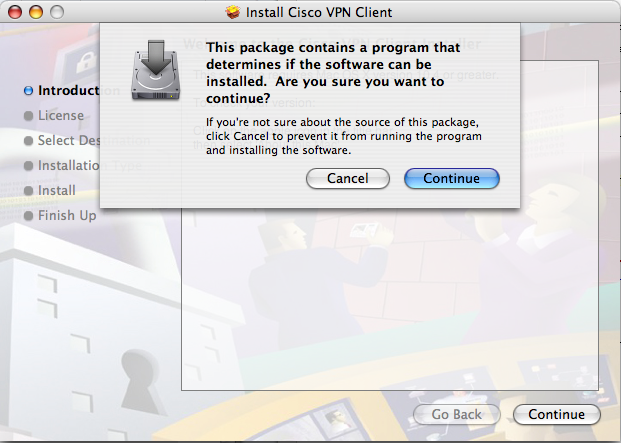
This message is just informing you that the installer will be verifying that your system has enough space and is capable of running the software. After clicking Continue and Continue again on the Introduction screen, you will see the User Agreement, which you are free to read through. Once you have finished, click "Continue" and "Agree." The next screen is where you select the location that you will be installing the VPN Client to, and looks similar to this:
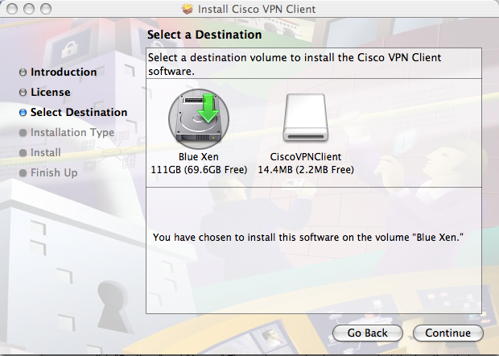
Select the drive that you have Mac OS X installed on. This should be the first drive listed on the screen. After selecting a drive, click "Continue." You will now be presented with the final screen before the install, which at this point all you need to do is hit the button that says "Install." After clicking the install button, you will begin installing the application. You may, however, be prompted with a window that looks similar to:
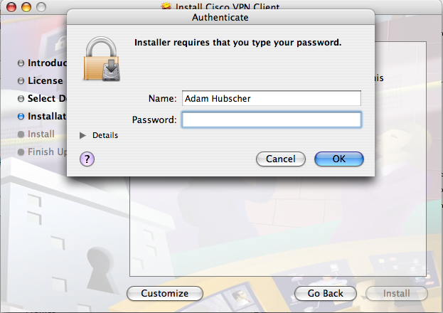
This is simply a precaution that requires you to enter your password when installing an application that will modify system files. Enter the username and password you use to log onto the system and click ok. Once everything is finished installing, you will be presented with the final screen of the installer, in which you will click the Continue button.You've now installed the VPN Client and are ready to configure it!
Configuring the Mac OS X VPN Client
To begin with configuring the VPN Client, we will need to open it. The default location to which the client is installed is your Applications folder. You can get to this by opening up a "Finder" window, which is accessed from the quick bar at the bottom of the screen, shown below.
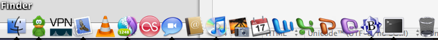Once you have opened the window, select the "Applications" folder and look for the icon labeled "VPN Client." This is how you will open the VPN Client. If you would like to make it easy to access, you can click and drag this icon to that same quick launch bar at the bottom of the screen where you found the finder. If you drop it on to that bar, you will create a shortcut; much like in Windows, this allows for easy access in the future. Go ahead and open up the VPN Client now and we will begin configuring it.
When you open the VPN Client for the first time, you will be presented with the following screen:
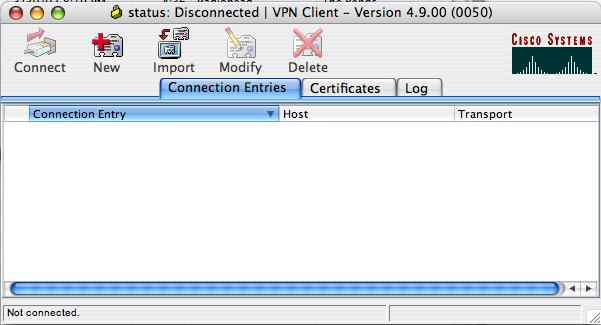We will need to create a new connection, so click on the "New" button. This will open the new connection window, in which you need to enter the following information:
- Connection Entry: Rackspace
- Description: Rackspace
- Host: vpn1.sat.rackspace.com
- Authentication Tab
- Select: Group Authentication
- Name: rackspace
- Password: rackspace
- Transport Tab
- Checkmark Enable Transparent Tunneling
- Select: IPSec over UDP(NAT / PAT)
Which will look like this: (Authentication tab is selected)
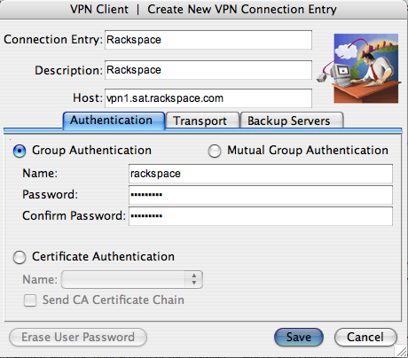
And the Transport tab:
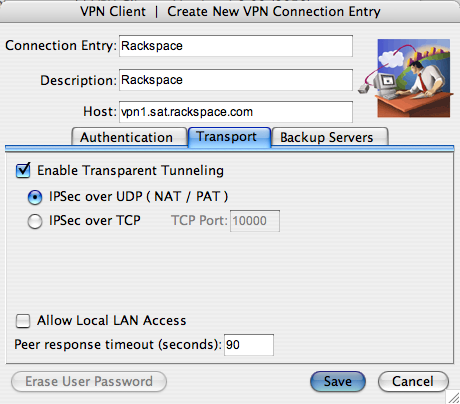
Once you have these settings in, click the save button. Doing this will add it to the window that you were in previously, which should now look like this:
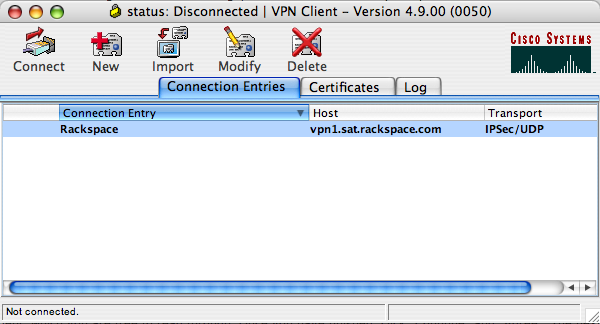
You are now ready to connect! Go ahead and click the "Connect" button in the top left corner. This may take a few minutes depending on your computer and the speed of your internet connection. Once the client makes a connection with the servers here in Rackspace, you will be presented with the following login prompt:
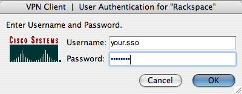
Enter your SSO (Single Sign-On) username and password as you would if you were logging into any other system here in Rackspace (IE: CORE) and click ok. After this, you will be displayed with one final window:
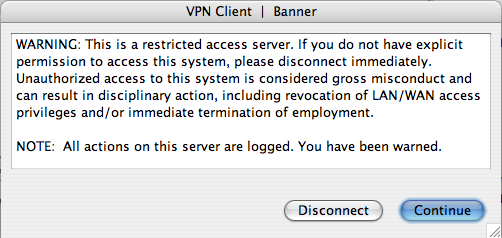
This disclaimer is there to remind you that you are connecting to a secure system and that only authorized users are allowed to connect. Please read through this disclaimer and be aware of what it says. Take care not to leave your computer unlocked or available in situations where you are currently connected to VPN and someone could easily walk by and compromise either confidential data or utilize your account to do anything malicious. Once you have read the message, click "Connect" to finish connecting. After a moment, you will be connected to the Rackspace internal network!
You have now connected to the Rackspace internal network, however there are some things that are different for the Mac than when you are using a PC. These are sometimes daunting as the majority of the systems we use within rackspace to do our work are in fact windows PCs. I will outline some of the things you need to remember, as well as how you can still remote into your box on your mac, using the Mac remote desktop client from Microsoft.
Important things to remember
While connected to the Rackspace network, you are able to access all of the file shares as well as all of the internal web sites. While the internal web sites follow the same addresses you normally use (for example, http://core.rackspace.com), file shares do not.
Accessing File Servers
Normally, accessing the file servers in Windows is as simple as going to Start, Run, and typing in "\\fileserver-sat." This is not the case in Mac OS X. There are a few extra steps, and a different location you must go to.
To begin with, while on your desktop, click on the "Go" menu at the top of the screen, and select "Connect to Server" as you see in the below image.
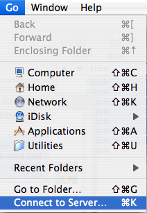When you select this, you will be presented with a window. In the box under the "Server Address:" text, you'll want to enter the following address: smb://fileserver.sat.corp.rackspace.com/. The result should resemble what you see below.
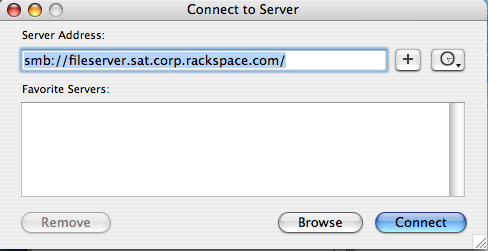After inputting this, click the connect button. This may take a few minutes depending on your computer and your internet connection speed. As soon as it finds and connects to the server, it will prompt you for authentication. You'll want to input the following information:
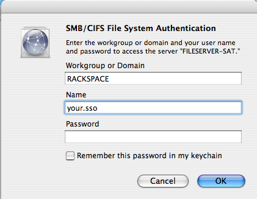
- Domain: RACKSPACE
- Username: Your SSO Username
- Password: Your SSO Password
After you input your credentials, click OK. It will take a moment to authenticate you. Once it is finished, you will be presented with a screen where you can select the folder you would like to mount. This is the specific share that you would like to access. The most common one is "PUBLIC." You can select the one you want by clicking on the drop down, selecting it, and clicking OK. There are a number of them, so it may take a little while to find the one you want.
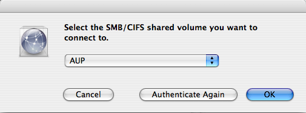At this point, once you have selected a proper share, you will be able to browse the files on that share so long as you have proper permissions.
How to Get Help
If you run into any issues with installing, configuring, or using the VPN client at any time, please feel free to contact the help desk at any time at x4357, or (210) 312-4357. We will do our best to assist you as quickly as possible. If you are running into any other issues after connecting with VPN, you are more than welcome to open a GENIE support ticket or give us a call as well.
Last Updated: Thursday, Oct 18th @ 4:19pm by Adam Hubscher - RITS Desktop Solutions